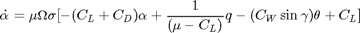
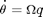
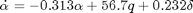
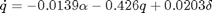
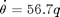
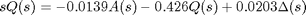
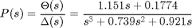
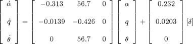
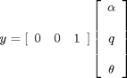

Aircraft Pitch: System Modeling
Key MATLAB commands used in this tutorial are: tf , ss
Contents
Physical setup and system equations
The equations governing the motion of an aircraft are a very complicated set of six nonlinear coupled differential equations. However, under certain assumptions, they can be decoupled and linearized into longitudinal and lateral equations. Aircraft pitch is governed by the longitudinal dynamics. In this example we will design an autopilot that controls the pitch of an aircraft.
The basic coordinate axes and forces acting on an aircraft are shown in the figure given below.

We will assume that the aircraft is in steady-cruise at constant altitude and velocity; thus, the thrust, drag, weight and lift forces balance each other in the x- and y-directions. We will also assume that a change in pitch angle will not change the speed of the aircraft under any circumstance (unrealistic but simplifies the problem a bit). Under these assumptions, the longitudinal equations of motion for the aircraft can be written as follows.
(1)

(2)
Please refer to any aircraft-related textbooks for the explanation of how to derive these equations. You may also refer to the Extras: Aircraft Pitch System Variables page to see a further explanation of what each variable represents.
For this system, the input will be the elevator deflection angle and the output will be the pitch angle of the aircraft.
Transfer function and state-space models
Before finding the transfer function and state-space models, let's plug in some numerical values to simplify the modeling equations shown above:
(3)
(4)
(5)
These values are taken from the data from one of Boeing's commercial aircraft.
1. Transfer function
To find the transfer function of the above system, we need to take the Laplace transform of the above modeling equations. Recall that when finding a transfer function, zero initial conditions must be assumed. The Laplace transform of the above equations are shown below.
(6)
(7)
(8)
After few steps of algebra, you should obtain the following transfer function.
(9)
2. State space
Recognizing the fact that the modeling equations above are already in the state-variable form, we can rewrite them as matrices as shown below.
(10)
Since our output is pitch angle, the output equation is the following.
(11)
Design requirements
The next step is to choose some design criteria. In this example we will design a feedback controller so that in response to a step command of pitch angle the actual pitch angle overshoots less than 10%, has a rise time of less than 2 seconds, a settling time of less than 10 seconds, and a steady-state error of less than 2%. For example, if the reference is 0.2 radians (11 degrees), then the pitch angle will not exceed approximately 0.22 rad, will rise from 0.02 rad to 0.18 rad within 2 seconds, will settle to within 2% of its steady-state value within 10 seconds, and will settle between 0.196 and 0.204 radians in steady-state.
In summary, the design requirements are the following.
- Overshoot less than 10%
- Rise time less than 2 seconds
- Settling time less than 10 seconds
- Steady-state error less than 2%
MATLAB representation
Now, we are ready to represent the system using MATLAB. Running the following code in the command window will generate the open-loop transfer function model described above.
s = tf('s');
P_pitch = (1.151*s+0.1774)/(s^3+0.739*s^2+0.921*s)
P_pitch =
1.151 s + 0.1774
-------------------------
s^3 + 0.739 s^2 + 0.921 s
Continuous-time transfer function.
To generate the state-space model described above, instead enter the following commands at the command line.
A = [-0.313 56.7 0; -0.0139 -0.426 0; 0 56.7 0]; B = [0.232; 0.0203; 0]; C = [0 0 1]; D = [0]; pitch_ss = ss(A,B,C,D)
pitch_ss =
a =
x1 x2 x3
x1 -0.313 56.7 0
x2 -0.0139 -0.426 0
x3 0 56.7 0
b =
u1
x1 0.232
x2 0.0203
x3 0
c =
x1 x2 x3
y1 0 0 1
d =
u1
y1 0
Continuous-time state-space model.
Note: It is possible to convert a state-space model to transfer function form, or vice versa using MATLAB. To learn more about conversions, refer to the Extras: System Conversions page.